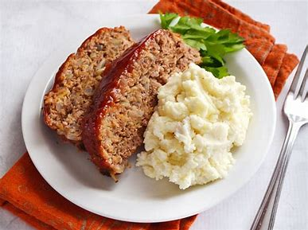

Eeasy Pleasing Meatloaf

Meatloaf is a classic comfort food that brings warmth and nostalgia to the dinner table. This hearty dish is made with a flavorful mixture of ground meat, breadcrumbs, eggs, and an array of seasonings, creating a moist and tender loaf that is both satisfying and delicious.
- 2 lb. lean ground beef
- 1 pkg. (6 oz.) STOVE TOP Stuffing Mix for Chicken
- 1 cup water
- 2 eggs, beaten
- 1/2 cup KRAFT Original Barbecue Sauce, divided
- Heat oven to 375°F.
-
Mix meat, stuffing mix, water, eggs and 1/4 cup barbecue sauce just until blended.
- Shape into loaf in 13x9-inch baking dish sprayed with cooking spray.
- Top with remaining barbecue sauce. Bake 1 hour or until done (160ºF).